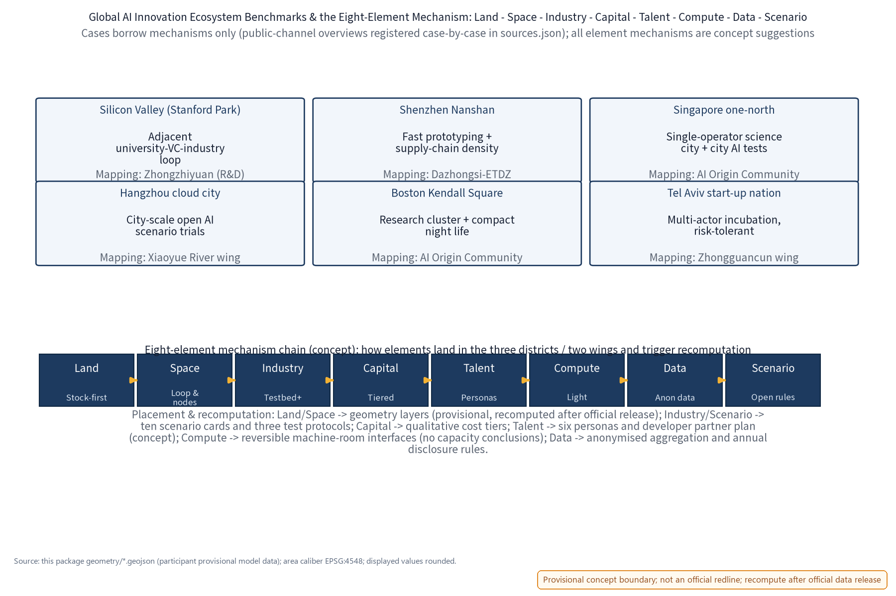
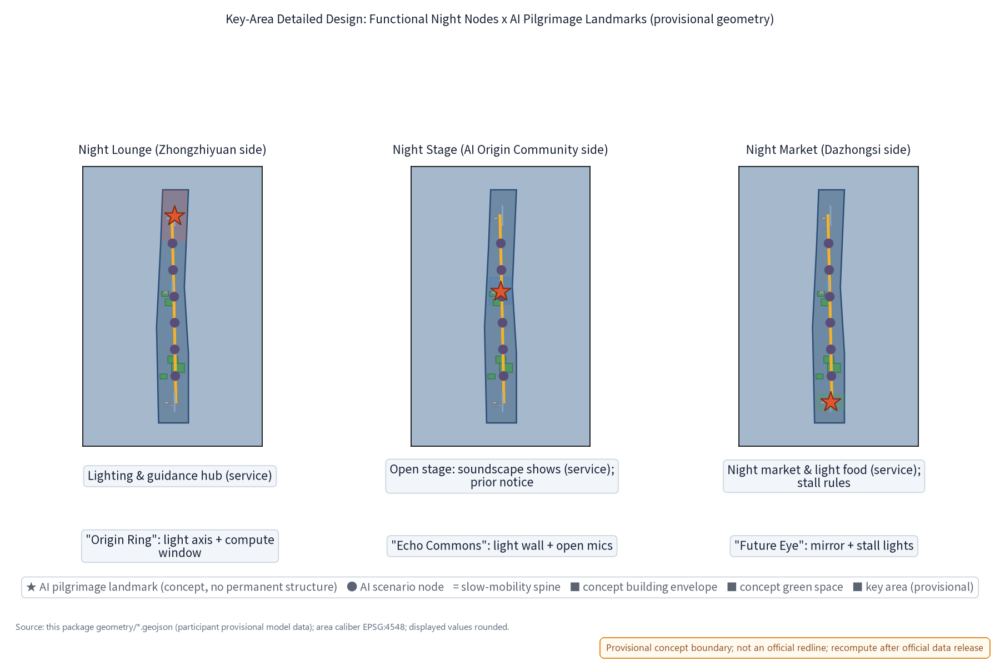
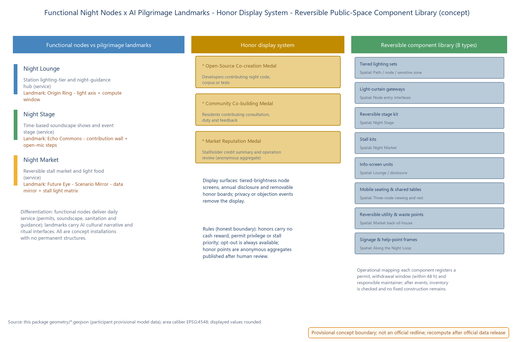
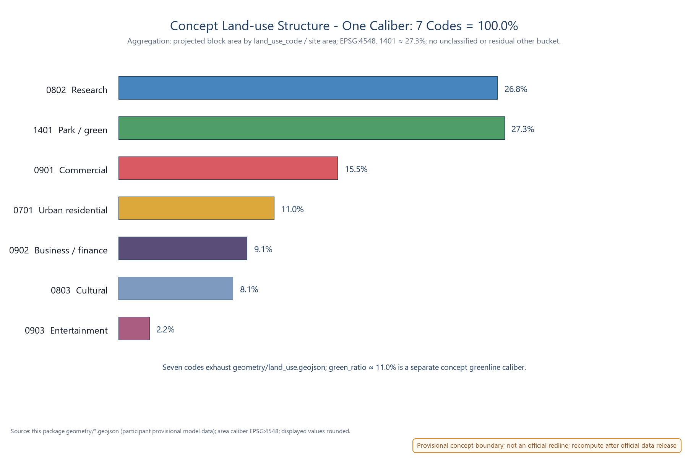
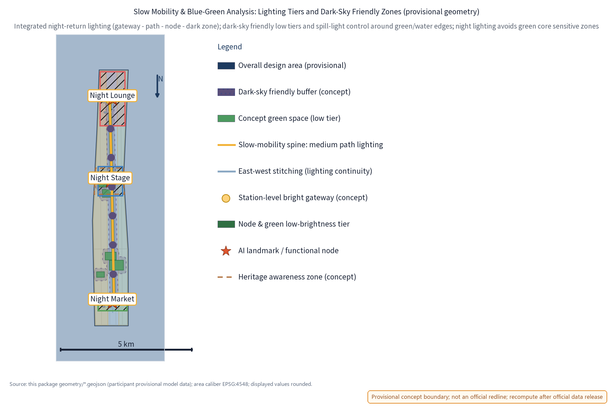
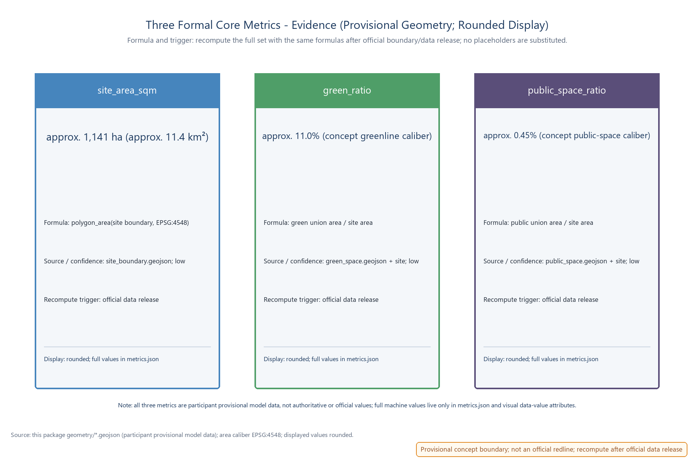

NIGHT·JZ Night Light Loop: Night Economy & Lightscape Operation Belt
visual/index.html | offline pageDay belongs to innovation; night belongs to life. One Light, One Show and One Market turn a Jingzhang heritage-park route into a slow, governable and repeatable night interface. AI proposes, summarises and alerts; people decide permits, volume, publication and withdrawal.
Three-tier scope and regional interfaces
The official text supplies three textual-caliber tiers: coordinated research approx. 43.6 km², overall design approx. 11.4 km², and key detailed-design areas approx. 368.4 ha. This package is a night-economy sub-scope inside the overall design tier; its polygons are temporary concept geometry.
Positioning, benchmark cases, AI night-scenario library and operation mechanism.
One Loop, Three Nodes, lighting tiers and regulatory-planning-depth expression.
Night Lounge, Night Stage and Night Market as relocatable prototypes.

Beiwei Community - night-return slow routes; Future Science City - event and showcase linkage; Huairou Science City - science communication; ETDZ - smart-hardware and test-equipment direction; Beijing-Tianjin-Hebei - weekend night-traveller linkage.
When official boundaries and data are released, recompute all three tiers with the same projected-area rule; refit placements without treating provisional geometry as ownership, redline or engineering position.
Brand and visual identity
NIGHT·JZ is an internal working codename for Night Light Loop. The mark combines a restrained glow arc, three node dots and two rail lines: a visual grammar for the One Loop Three Nodes structure and Jingzhang railway memory.
One Light - Night Lounge; One Show - Night Stage; One Market - Night Market. The English board uses NIGHT·JZ and English node names only.
No official trademark search or clearance is complete. No registration, licensing or commercial promotion is proposed; rename the system as a whole if prior rights conflict.

Benchmark library and eight-element mechanism
The research layer borrows mechanisms, never scales, images or institutional commitments. Six night-economy cases and six global AI ecosystem cases are registered case-by-case in sources.json; public-channel “first” or “leading” language remains a verification task.
Shanghai Bund and Yuyuan night tours; Chengdu Jinjiang night cruise; Singapore Night Safari; Amsterdam night mayor; Shanghai Yuyuan Lantern Festival; Seoul night market brand.
Silicon Valley / Stanford Research Park; Shenzhen Nanshan; Singapore one-north; Hangzhou city-cloud practice; Boston Kendall Square; Tel Aviv start-up ecosystem.
| Element | Concept mechanism | Placement | Recompute trigger |
|---|---|---|---|
| Land | Stock-first, reversible use; no large new night-economy building. | Three districts along the Jingzhang green belt. | Official land data. |
| Space | One Loop, Three Nodes; day/night shared public space. | Zhongzhiyuan / AI Origin Community / Dazhongsi. | Official geometry. |
| Industry | Three bounded test protocols plus open scenario rules. | Dazhongsi - Xiaoyue River wing. | Pilot measurement. |
| Capital | Qualitative cost tiers; no investment promise. | Whole belt, concept tiers. | System definition. |
| Talent | Six personas, developer partner plan and honor display. | AI Origin Community - Zhongguancun wing. | Community pilot. |
| Compute | Light-touch, reversible machine-room interface; no capacity conclusion. | Zhongzhiyuan interface direction. | Demand estimate. |
| Data | Anonymised aggregation, annual disclosure, no individual tracking. | Belt-wide governance interfaces. | Monitoring setup. |
| Scenario | Ten AI cards with human review and measurable pass/fail. | Three nodes and route. | Pilot calibration. |

Overall structure: One Loop, Three Nodes
The Night Loop follows the Jingzhang heritage park belt and transit interfaces as a calm, slow route. Lighting is tiered: brighter station gateways, medium guidance paths, low-brightness node and green zones, and reserved dark-sky-friendly areas. The design depth is expressed as problem - spatial object - indicator - data gap - recomputation path; FAR and building height remain unknown.

Stock-first renewal: use existing plazas, public interfaces and retainable buildings; use removable lighting, signage, seating, stage and stall components; no large new building or land-use change is introduced for the night economy.
Key-area design: daily service before spectacle
Night Lounge
Zhongzhiyuan sideStation-level lighting and information hub. The gateway transitions from bright to low-brightness zones; paper guides coexist with tiered screens and a luminous route map.
Night Stage
AI Origin Community sideOpen performance and event ground with demountable stage components, time-based soundscape control, resident notice and an opinion channel.
Night Market
Dazhongsi sideLow-impact night market with removable stall kits, shared tables, published stall rules and reversible utility and waste interfaces.

AI pilgrimage landmarks, honors and reversible components
Functional night nodes deliver daily service; pilgrimage landmarks carry culture narrative and ritual interfaces. The distinction avoids turning a landmark into an operating burden. All landmark content is human-reviewed, uses no individual identification and can be replaced or withdrawn.
Night Lounge: circular light axis and compute-display window; a “where I plug into AI” origin ritual.
Night Stage: open-source contribution light wall and open-mic steps; a “everyone can write AI” co-creation ritual.
Night Market: data-mirror screen and stall light matrix; the scenario itself becomes the exhibit.

Open-Source Co-creation Medal; Community Co-building Medal; Market Reputation Medal. Anonymous aggregates only; no cash, permit privilege or priority stall. Privacy events, escalated complaints or objections trigger removal and exit.
Tiered lighting; light-curtain gateways; reversible stage kit; stall kits; info-screen units; mobile seating and shared tables; reversible utility and waste points; signage and help-point frames. Each item has spatial mapping, owner, withdrawal checklist and reuse scenario.
Personas, scenario cards and bounded industry tests
Six personas describe night-service differences, not population inference. Every persona retains a non-digital equivalent path and can refuse or remove AI assistance. All scenario cards process anonymised aggregated data only; people keep approval, publication and withdrawal decisions.
Safe last-train walking, continuous lighting and clear guidance.
Night socialising, shows, markets, booking and credits.
Orientation, route narration and safety help.
Time-slot matching, permits and credit summary.
Quiet rights, paper channels and advance notice.
Inspection, work orders and decommissioning decisions.
| Scenario cards (10) | Boundary and output | Human review / placement |
|---|---|---|
| Energy optimisation; crowd-density sensing; night-return safety guidance | Dimming, guidance and safety suggestions only; no direct device control, individual identification or trajectory retention. | Operator or on-site staff confirm; Lounge, route and three nodes. |
| Night guidance; disclosure copy | Draft route narration and annual disclosure material; paper and human-edited equivalents remain. | Editors review; whole Loop, screens and online publication. |
| Stall matching; market credit | Candidate matching and anonymised credit summaries; permits and profiling are human decisions. | Operation staff review; Night Market. |
| Light-pollution monitoring | Brightness and spectrum anomaly alerts; no automatic downgrade or ecological conclusion. | Human review before disclosure; green-sensitive zones. |
| Event filing collaboration; maintenance work order | Draft checklists and inspection suggestions; filing, maintenance and withdrawal remain human decisions. | Operation staff or supervisors review; Stage and operation rooms. |
Three industry test protocols
| Protocol | Sandbox boundary | Pass / fail and exit |
|---|---|---|
| Crowd-density guidance | Lounge-to-route only; no residential extension; no individual identification. | Pass only after an eight-week concept calibration; privacy complaints or ineffective guidance stop and withdraw. |
| Stall matching and time permits | Dazhongsi removable kits; reversible utilities; no fixed construction. | Pass requires no escalated complaints; noise or waste exceedance revokes permits and withdraws kits. |
| Light-pollution and dark-sky validation | Concept luminaires at green edges; heritage and ecological cores untouched. | Pass requires four weeks of monitoring compliance; ecological or resident complaints trigger downgrade and recomputation. |
Land-use, building and renewal boundary
The land-use figure uses one aggregation caliber: the seven land_use_code categories in geometry/land_use.geojson exhaust the concept layer. The 1401 park/green share is approx. 27.3%; the approx. 11.0% greenline ratio is a different layer and is not added to the land-use total.

Existing retainable envelopes are design carriers only. FAR, heights, capacity and engineering performance are not asserted.
Retain first; renovate lightly; remove only reversible night components after a stop or withdrawal decision.
Lighting and environmental safety -> performance and market operations -> governance and annual disclosure.
Transport, slow mobility and blue-green public space
The route gives priority to walking, cycling, last-train arrival and clear help points. Transit interfaces are concept locations. Lighting tiers, soundscape controls, signage, seating and green-edge dark-sky sensitivity share one operating calendar and can be withdrawn independently.

Paper guides, tiered information screens, low-glare wayfinding, quiet transitions, seating and help-point frames are equivalent channels, not decorative extras.
Sound direction, volume cap, pre/post-event quiet windows, light-pollution review, waste checklist and 48-hour component withdrawal are concept controls pending baseline measurement.
Phasing, developer community and conversion pathway
Confirm geometry and rights; measure light, noise, walking, waste and privacy baseline; test paper-equivalent guidance.
Run Lounge-route guidance, Stage filing and Market matching in shadow mode, with human approvals and public feedback.
Publish annual light-environment and honor summaries; recompute geometry; stop, downgrade or renew components through a review gate.
Partner plan; regular community rhythm; open, versioned assets with contribution boundaries; operation support and maintainer rotation. No membership, procurement or employment promise.
Experience participant -> co-creator -> pilot participant -> ecosystem partner. Each step requires consent, measured evidence and a reversible exit; none grants rights or priority.
Formal metrics and recomputation evidence
metrics.json.
data-value attributes; displayed figures are rounded.9 scenario nodes
3 industry protocols
6 service personas
6 global AI ecosystems
Task coverage and governance checks
- Agent.1: name, mark, three themes, five functions, three districts, two wings.
- Agent.2: six global ecosystem cases and eight-element mechanism chain.
- Agent.3: ten scenario cards, six personas and three industry protocols.
- Agent.4: three differentiated landmarks, honors and eight reversible components.
- Agent.5: railway and AI culture narrative plus reusable English copy.
- Agent.6: events, developer community, open rules and conversion pathway.
- Anonymised aggregates only; no individual-identifying tracking.
- AI outputs are suggestions or drafts; humans approve, publish, permit and withdraw.
- Paper, staffed and quiet-channel equivalents remain available.
- Privacy events, complaints, ecological signals or failed tests trigger stop, downgrade, withdrawal and recomputation.
Sources, assumptions and file map
Textual-caliber scope and task requirements are anchored to the organiser announcement and task book. Public benchmark mechanisms are registered in sources.json with publisher, URL, publication/access dates, license or reuse boundary, and verification status. Provisional geometry is sourced from the package GeoJSON files and is explicitly non-official.
proposal.en.md for the full English narrative; metrics.json for machine values; geometry/*.geojson for provisional layers; manifest.json for file roles and translations.All images resolve to local relative paths. This page uses a system font stack, no remote scripts, no remote images and no runtime data fetch.
Assumptions and decision gates
All boundaries and placements are temporary concept geometry. Replace with official geometry, recompute areas and refit the route before any formal planning use.
Public benchmark claims are mechanism references only. Independent verification remains open for wording that says first, leading or equivalent.
Brand names and marks remain internal working codenames until search and clearance. Existing rights, ownership and cooperation are not inferred.
The concept can be stopped as a whole or by layer. A privacy event, resident objection, ecological signal, failed test, unsafe sound/light condition or unusable data baseline triggers pause, downgrade, withdrawal and a documented recomputation path.
Self-check status
Manifest, required files, structured metrics and language pairs are intended to be machine-checkable.
GeoJSON layers, three nodes, two wings and provisional boundary cautions remain linked to the narrative.
English figures, HTML and A0/A3 drawings use matching names, rounded displays and separated footer badges.
This page reports package evidence and project-check status; it is not a CocoSgt review, score or acceptance decision.